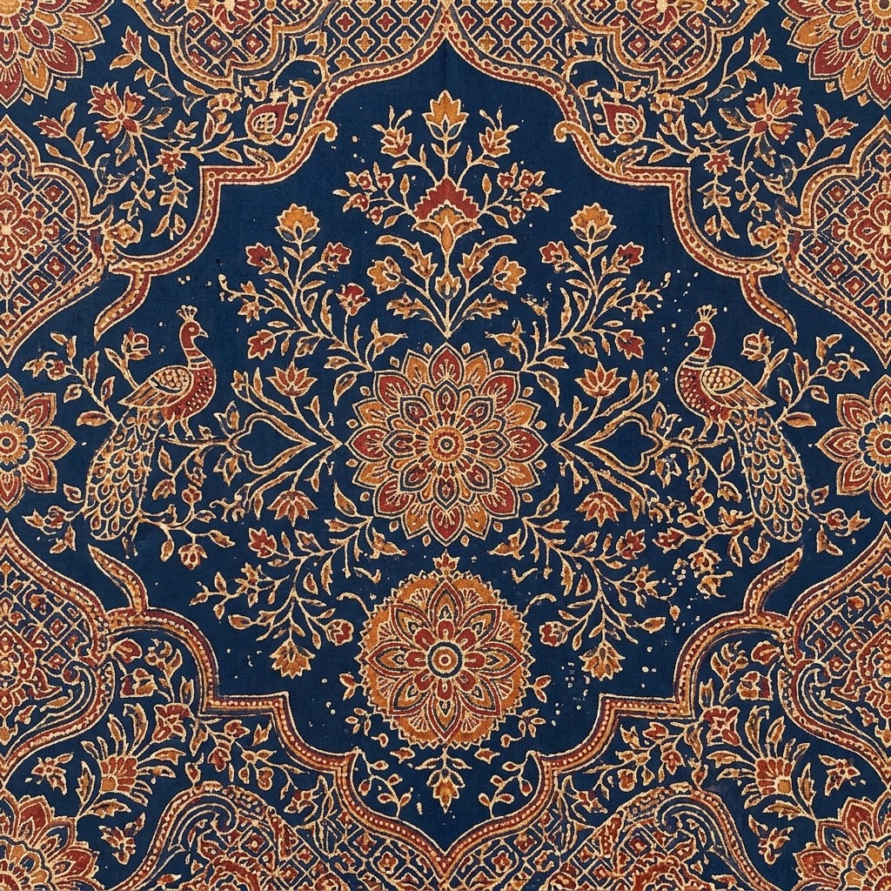
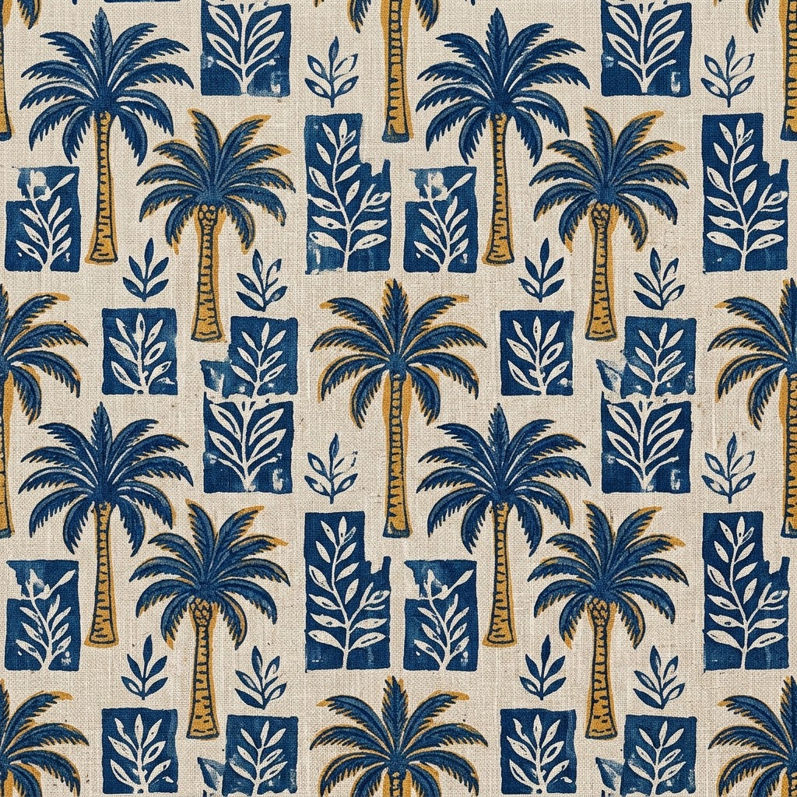
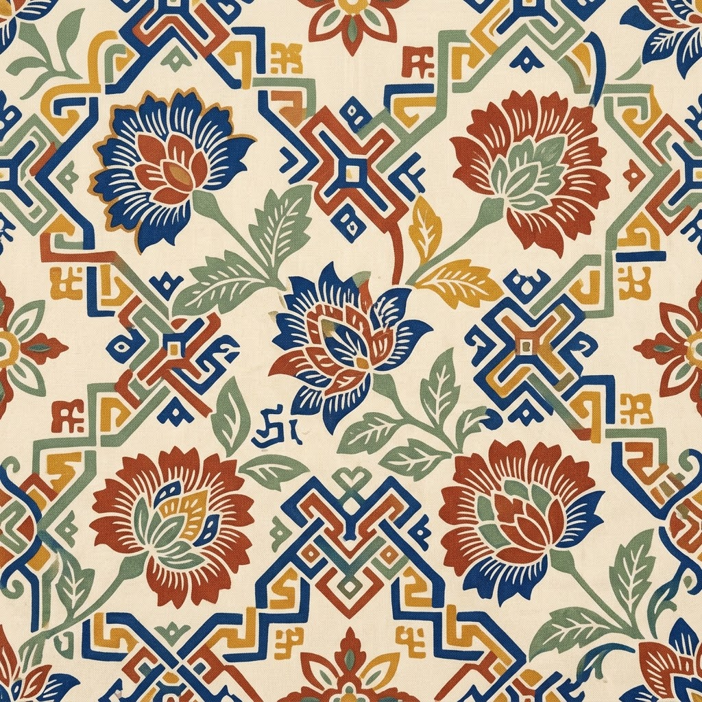
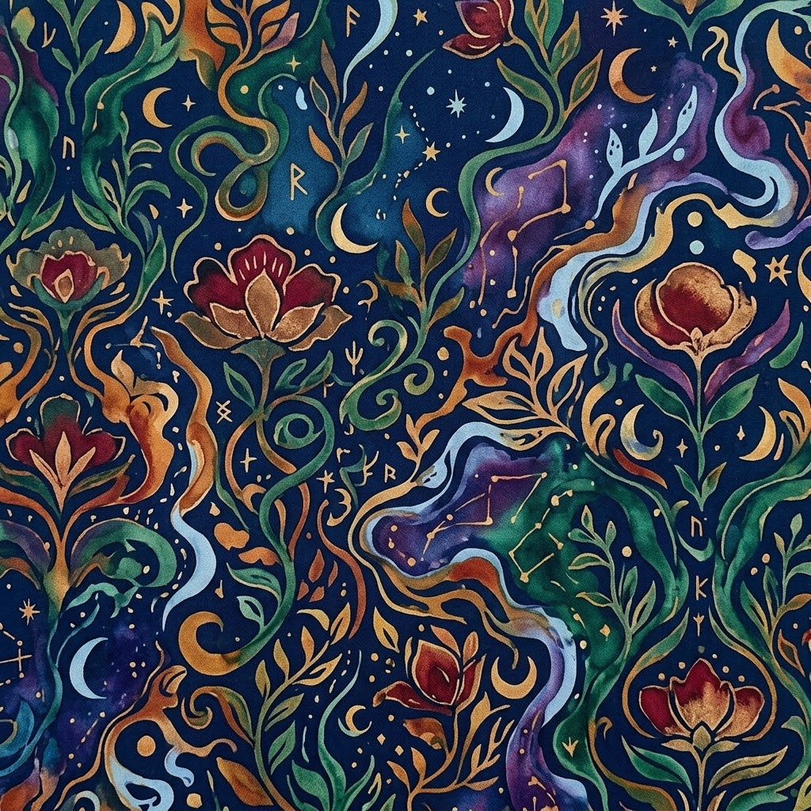
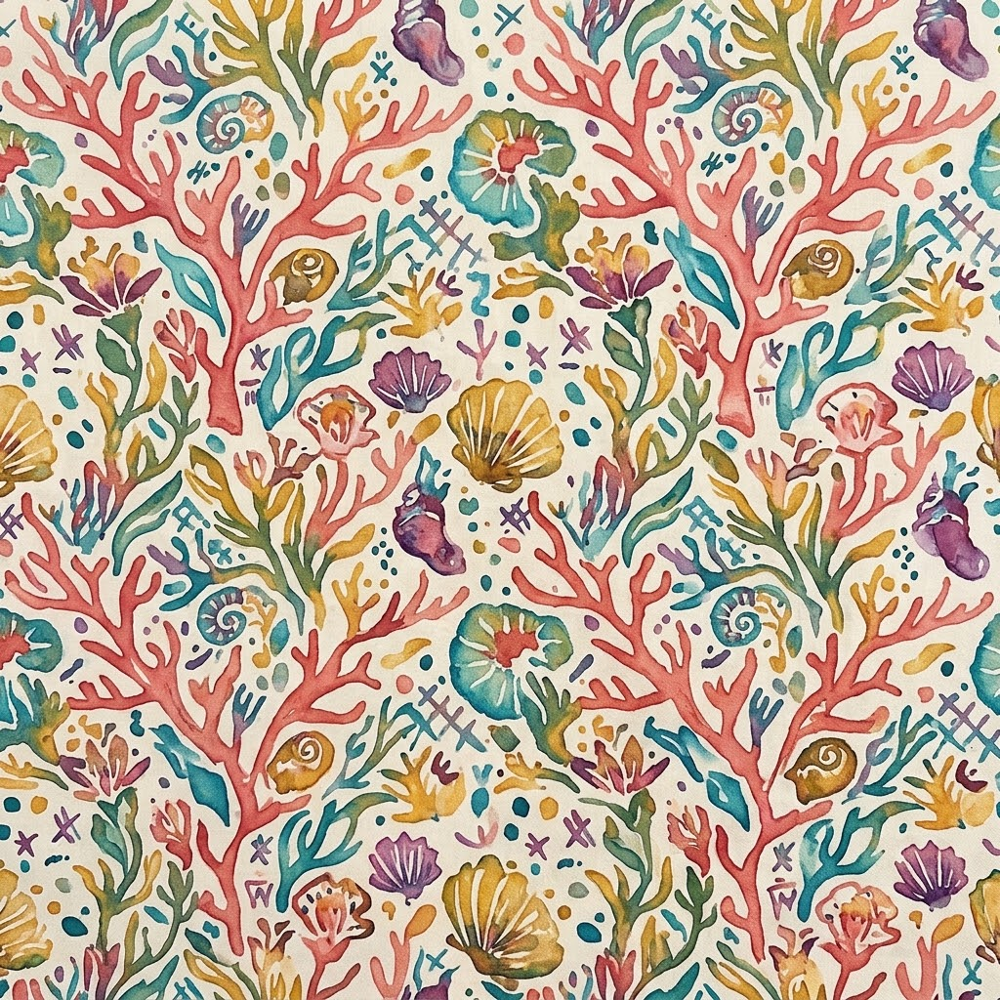

Studio cetak & sablon di Denpasar
Dari sablon manual, dying, sublimasi, sampai screen printing — kami kerjakan sendiri tiap tahapnya, dari desain film sampai produk siap dipakai, supaya hasilnya sesuai yang Anda bayangkan. Belum punya desain? Konsultasi dulu saja, gratis.
← Geser untuk melihat layanan →
← Geser untuk melihat layanan →





Ceritakan kebutuhan Anda lewat WhatsApp — jumlah, bahan, budget, dan tenggat waktu. Belum punya desain juga tidak masalah.
Kami bantu siapkan atau sesuaikan file desain, lengkap dengan pilihan warna dan teknik cetak yang paling cocok untuk medianya.
Setelah desain dan harga disepakati, pesanan mulai dikerjakan di studio — dari film sampai proses cetak atau sablonnya.
Tiap hasil diperiksa satu per satu — kerataan warna, jahitan, dan kerapian cetakan — sebelum dinyatakan siap kirim.
Pesanan dikemas dan dikirim atau bisa diambil langsung di studio, sesuai kesepakatan di awal.
“Order kaos komunitas 80 pcs selesai lebih cepat dari perkiraan, warnanya juga rata semua. Bakal order lagi buat acara berikutnya.”
“Sempat konsultasi lama soal bahan yang cocok buat produk retail kami. Prosesnya jelas, dan hasil sablonnya awet dicuci berkali-kali.”
“Butuh merchandise seragam buat acara kantor dalam waktu mepet, tetap bisa dikerjakan dan hasilnya rapi.”
Bisa. Sebagian layanan memang punya minimal order untuk produksi jumlah besar — cek bagian spesifikasi di tiap layanan, atau tanyakan langsung lewat WhatsApp.
Bisa. Kirim file desain Anda lewat WhatsApp, nanti kami bantu sesuaikan dengan teknik cetak yang dipilih.
Untuk sebagian besar layanan bisa, tergantung media dan teknik cetaknya. Konsultasikan dulu ukuran yang Anda mau.
Beda-beda tergantung jenis layanan dan jumlah pesanan — perkiraan durasi tiap layanan bisa dilihat di halaman detailnya.
Bisa. Beberapa layanan memang disiapkan untuk kebutuhan produksi massal — silakan diskusikan jumlah dan tenggat waktunya.
Bisa, dan gratis. Chat lewat WhatsApp untuk diskusi desain, bahan, atau teknik cetak sebelum memutuskan order.
KUBU BALI PRINTING mulai dari studio sablon kecil di Denpasar, mengerjakan pesanan kaos komunitas dan konveksi rumahan satu per satu dengan tangan. Seiring waktu teknik yang dikuasai bertambah — dying, sublimasi, design, film, sampai screen printing — tapi caranya tetap sama: dikerjakan sendiri, di studio sendiri, bukan dilempar ke pihak ketiga.
Kami membantu bisnis, komunitas, dan pelanggan individu mendapatkan hasil cetak yang rapi, tepat waktu, dan sesuai kebutuhan — mulai dari satuan untuk keperluan retail sampai produksi massal untuk korporat.